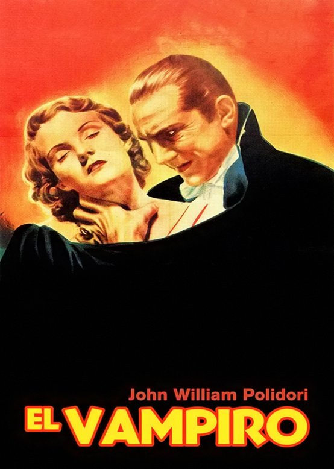

El hombre de arena - E.T.A. Hoffmann

El hombre de arena (Der Sandmann) es el relato más célebre de E.T.A. Hoffmann. Publicado en 1817 en sus Cuentos nocturnos (Nachtstücke), es el relato más representativo del máximo autor del género del romanticismo negro (Schwarze Romantik, conocido también como literatura de terror gótico) durante el siglo XIX. Se trata de un relato y no de un cuento, ya que no presenta las características como para serlo. El relato narra la vida de un estudiante, Nathanaël, quien está traumatizado por la muerte de su padre, ocurrida durante su infancia. A pesar de estar comprometido, se enamora de una autómata, Olimpia, construida por Spalanzani y un cómplice. Nathanaël cree que éste es real. El descubrimiento del truco lo lleva a la locura y finalmente a la muerte.."
El vampiro - John William Polidori

El vampiro (The vampyre) es un relato de vampiros del escritor inglés John William Polidori, publicado el 1 de abril de 1819 en la revista New Monthly Magazine. El vampiro es la obra fundacional de la literatura vampírica en inglaterra. Su mayor mérito es haber reunido exitosamente casi todos los matices del vampirismo y darles coherencia dentro de una estructura narrativa. Si pensamos en el relato de vampiros como un género literario, El vampiro de John William Polidori es el primero de esta larga tradición.
Todo lo que rodea este cuento es polémico, incluso su autoría fue dudosa. La primera edición de 1819 rezaba: Un cuento de Lord Byron (A tale by Lord Byron). Incluso el mismísimo Lord Byron se atribuyó el relato sólo para fastidiar a Polidori, que además era su médico personal. Lo cierto es que el debate comenzó gracias al sospechoso parecido de una escena de El vampiro con otra de El entierro (The burial), un cuento inconcluso de Lord Byron.